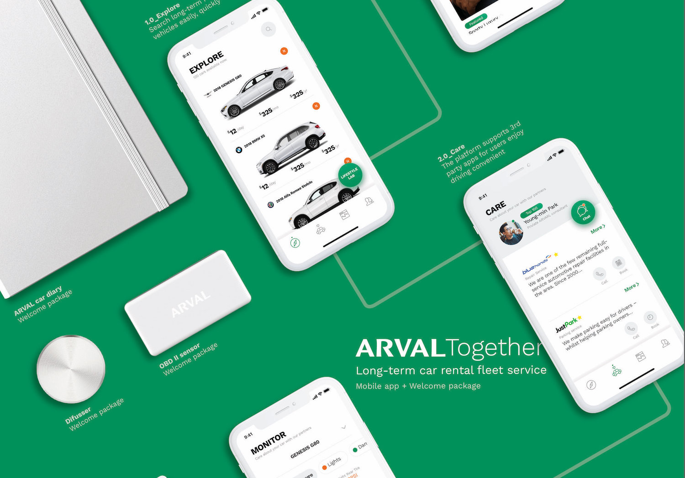
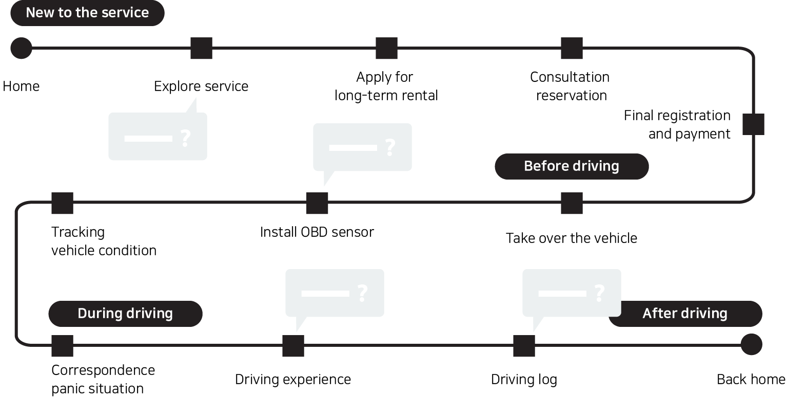
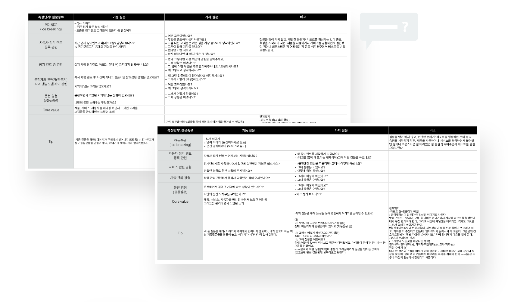
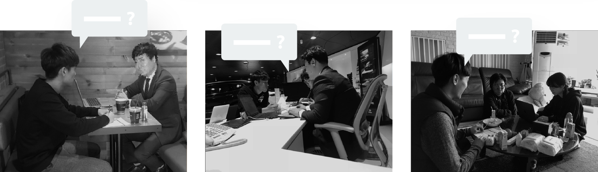
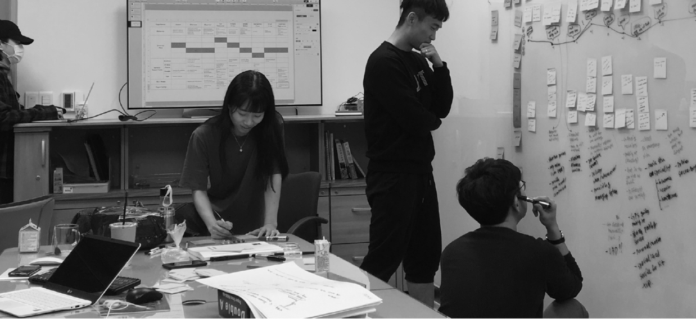
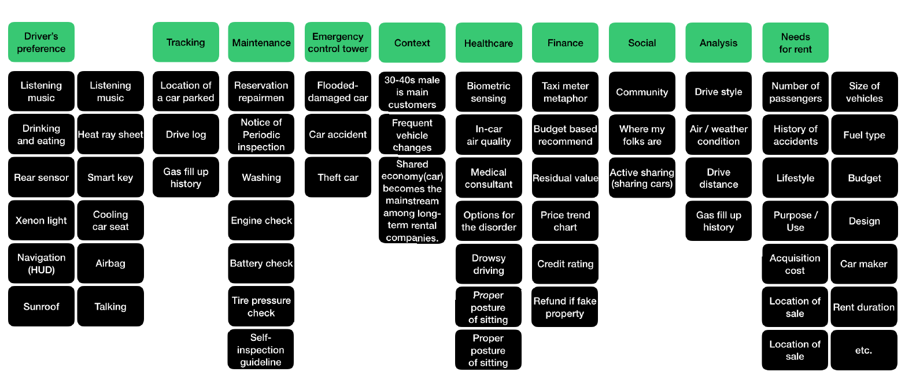
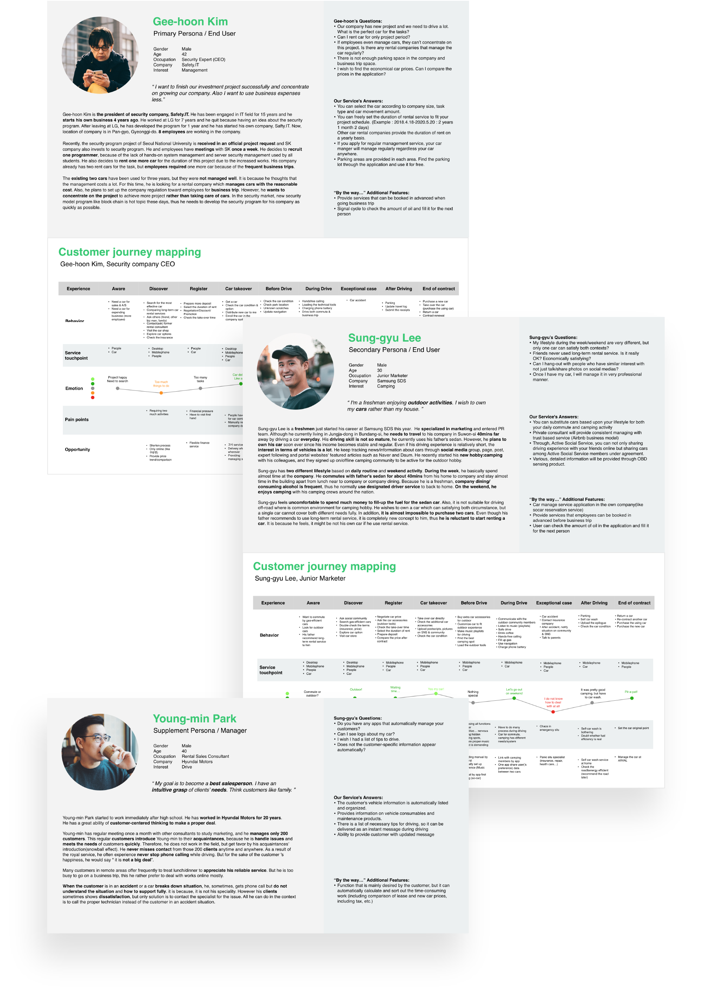
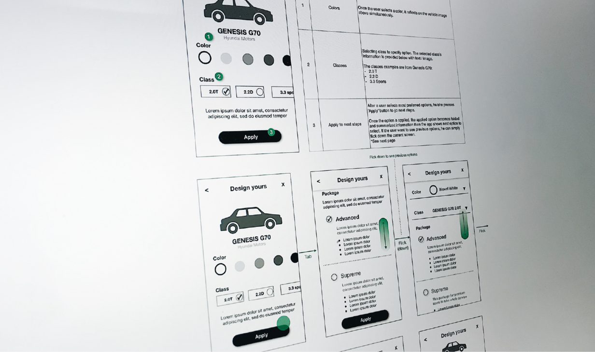

Arval Together
Arval의 장기 렌터카 서비스 디자인
Type
UI/UX 프로토타이핑
Affiliation
UNIST 창의디자인공학과 / Enhancers(Italian UX agency)
Role
UI/UX 디자이너
프로젝트 기획, 사용자 조사, 데이터 분석, UI 디자인, 프로토타이핑
Tools
Sketch UI디자인,
Origami Studio / Marvel 프로토타이핑
Duration
2018.04 ~ 06 (3개월)
Overview
Arval Together는 라이프 스타일에 맞춰 다양한 차량을 소유/경험할 수 있는 새로운 개념의 장기 렌트 서비스다.
나아가, on-board diagnostics(OBD) 센싱 및 판매부터 유지 보수까지 언제 어디서나 모바일 앱으로 실시간 서비스를 제공받을 수 있다.

BNP PARIBAS GROUP이 Enhancers에 Arval 서비스 디자인을 요청하였으며, Enhancers는 초기 디자인 방향을 의뢰하였다.
Background
본 프로젝트는 BNP PARIBIAS GROUP의 장기 렌트 서비스를 제공하는 자회사 Arval을 위해 Enhancers와 함께 수행한 프로젝트이다.
고객 요구 분석 및 문헌조사를 통해 다음과 같은 세 가지 도전 과제 및 기회를 발견할 수 있었다.
- 도시에 거주하는 사람들에게 차량을 구매/소유하는 개념이 비효율적으로 인식되고 있다.
- 모든 것들이 연결되고 있는 시대에서 사용자들은 언제 어디서든 서비스를 사용할 수 있길 기대한다.
- 커넥티드 카 기술의 발전으로 인해, 운전자, 자동차, 서비스 업체, 판매자 간 제약 없는 소통이 가능해졌다.
User Study
경쟁사 및 트렌드 리포트 등 데스크 리서치를 통해 장기 렌트 산업의 as-is와 to-be를 이해할 수 있었다.
이러한 이해를 바탕으로 리서치 프레임을 아래와 같이 설정하였다.
- 매끄럽고 안전한 차량 관리
- 새로운 차량 소유의 개념
- 차량 딜러와 운전자의 지속 가능한 관계
위 주요 기회 영역을 바탕으로 다음과 같이 운전 전, 중, 후의 운전자 중심 시나리오를 설계하여 필드 스터디의 질문을 설계하였다.



Data Modeling
Affinity Diagram
사용자 조사 과정을 통해 다양한 인사이트를 도출할 수 있었고, 어피니티 다이어그램을 활용해 주요한 키워드를 발견할 수 있었다.


Persona
어피니티 다이어그램을 통해 도출한 키워드의 주요한 정도에 따라 primary, secondary, supplemental 페르소나를 설계하였다.

Crazy 8's
UI 설계를 위해 디자인 워크숍 ‘crazy 8s‘을 진행하였다.
제한된 시간 동안 가능한 한 빨리, 많은 아이디어를 스케치하고 토론하는 활동으로써, 2시간 동안 20개의 아이디어로부터 200개 이상의 컨셉 스케치를 만들어 낼 수 있었다.
UI Design
Sitemap
워크숍을 통해 discover, care, monitoring, social, my car와 같이 5 개의 주요 서비스를 구성하였고, 이를 기반으로 사이트맵을 설계하였다.
Wire Framing

Lifestyle Lab
사용자가 차량 구매를 결정했을 때, 수많은 선택 옵션을 결정하기가 쉽지 않다.
이를 위해, 우리에게 친숙한 라이프스타일 키워드를 차량 전무가 또는 운전자 커뮤니티가 제공하여 나와 맞는 라이프스타일을 선택하고, 그 안에서 신중하게 큐레이션 된 자동차 리스트를 살펴볼 수 있다.

Care Service
사용자가 Arval Together에서 장기 렌터를 시작하면 웰컴 패키지와 함께 자가 진단 장치(OBD 센서)가 제공된다.
OBD 센서를 통해 자신의 차량의 현재 상태를 확인할 수 있다.
또한 전담 자동차 딜러와 타사 자동차 관리 서비스가 실시간으로 차량을 관리한다.
Car Share
필요에 따라 사용자는 ‘폐쇄적/신뢰할 수 있는 커뮤니티’의 회원들과 차량을 공유하거나 대여가 가능하며 다양한 차량을 경험할 수 있다.
두 대 이상의 차량을 소유하고 있는 사업체의 운영진은 본 플랫폼을 통해 효율적으로 직원들의 차량을 관리 할 수 있다.
Prototype
Product Design
Arval Together 사용자를 위해 OBD 허브가 포함되어 있는 웰컴 패키지를 제작하였다.

Video Link
Type
UI/UX 프로토타이핑
Affiliation
UNIST 창의디자인공학과 / Enhancers(Italian UX agency)
Role
UI/UX 디자이너
프로젝트 기획, 사용자 조사, 데이터 분석, UI 디자인, 프로토타이핑Tools
Sketch UI디자인, Origami Studio / Marvel 프로토타이핑
Duration
2018.04 ~ 06 (3개월)
Overview
Arval Together는 라이프 스타일에 맞춰 다양한 차량을 소유/경험할 수 있는 새로운 개념의 장기 렌트 서비스다.
나아가, on-board diagnostics(OBD) 센싱 및 판매부터 유지 보수까지 언제 어디서나 모바일 앱으로 실시간 서비스를 제공받을 수 있다.
BNP PARIBAS GROUP이 Enhancers에 Arval 서비스 디자인을 요청하였으며, Enhancers는 초기 디자인 방향을 의뢰하였다.
Background
본 프로젝트는 BNP PARIBIAS GROUP의 장기 렌트 서비스를 제공하는 자회사 Arval을 위해 Enhancers와 함께 수행한 프로젝트이다. 고객 요구 분석 및 문헌조사를 통해 다음과 같은 세 가지 도전 과제 및 기회를 발견할 수 있었다.
- 도시에 거주하는 사람들에게 차량을 구매/소유하는 개념이 비효율적으로 인식되고 있다.
- 모든 것들이 연결되고 있는 시대에서 사용자들은 언제 어디서든 서비스를 사용할 수 있길 기대한다.
- 커넥티드 카 기술의 발전으로 인해, 운전자, 자동차, 서비스 업체, 판매자 간 제약 없는 소통이 가능해졌다.
User Study
경쟁사 및 트렌드 리포트 등 데스크 리서치를 통해 장기 렌트 산업의 as-is와 to-be를 이해할 수 있었다.
이러한 이해를 바탕으로 리서치 프레임을 아래와 같이 설정하였다.
- 매끄럽고 안전한 차량 관리
- 새로운 차량 소유의 개념
- 차량 딜러와 운전자의 지속 가능한 관계
위 주요 기회 영역을 바탕으로 다음과 같이 운전 전, 중, 후의 운전자 중심 시나리오를 설계하여 필드 스터디의 질문을 설계하였다.
Data Modeling
Affinity Diagram
사용자 조사 과정을 통해 다양한 인사이트를 도출할 수 있었고, 어피니티 다이어그램을 활용해 주요한 키워드를 발견할 수 있었다.
Persona
어피니티 다이어그램을 통해 도출한 키워드의 주요한 정도에 따라 primary, secondary, supplemental 페르소나를 설계하였다.
Crazy 8's
UI 설계를 위해 디자인 워크숍 ‘crazy 8s‘을 진행하였다.
제한된 시간 동안 가능한 한 빨리, 많은 아이디어를 스케치하고 토론하는 활동으로써, 2시간 동안 20개의 아이디어로부터 200개 이상의 컨셉 스케치를 만들어 낼 수 있었다.
UI Design
Sitemap
워크숍을 통해 discover, care, monitoring, social, my car와 같이 5 개의 주요 서비스를 구성하였고, 이를 기반으로 사이트맵을 설계하였다.
Wire Framing
Lifestyle Lab
사용자가 차량 구매를 결정했을 때, 수많은 선택 옵션을 결정하기가 쉽지 않다. 이를 위해, 우리에게 친숙한 라이프스타일 키워드를 차량 전무가 또는 운전자 커뮤니티가 제공하여 나와 맞는 라이프스타일을 선택하고, 그 안에서 신중하게 큐레이션 된 자동차 리스트를 살펴볼 수 있다.
Care Service
사용자가 Arval Together에서 장기 렌터를 시작하면 웰컴 패키지와 함께 자가 진단 장치(OBD 센서)가 제공된다.
OBD 센서를 통해 자신의 차량의 현재 상태를 확인할 수 있다.
또한 전담 자동차 딜러와 타사 자동차 관리 서비스가 실시간으로 차량을 관리한다.
Car Share
필요에 따라 사용자는 ‘폐쇄적/신뢰할 수 있는 커뮤니티’의 회원들과 차량을 공유하거나 대여가 가능하며 다양한 차량을 경험할 수 있다. 두 대 이상의 차량을 소유하고 있는 사업체의 운영진은 본 플랫폼을 통해 효율적으로 직원들의 차량을 관리 할 수 있다.
Prototype
Product Design
Arval Together 사용자를 위해 OBD 허브가 포함되어 있는 웰컴 패키지를 제작하였다.